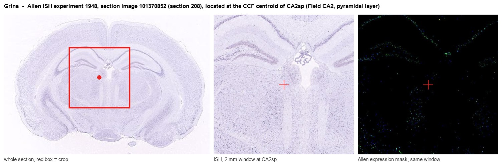
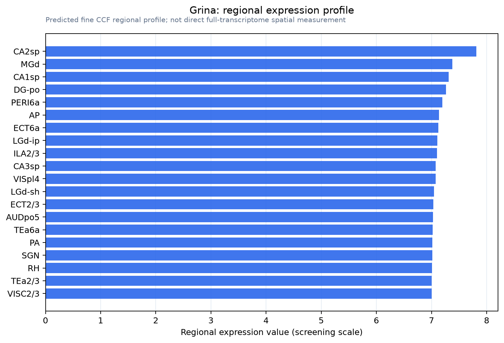

Grina
Protein lifeguard 1 (Glutamate [NMDA] receptor-associated protein 1) (NMDA receptor glutamate-binding subunit)
Spatial tier: REGION_BIASED · Class: ION_CHANNEL · Top region: CA2sp (Field CA2, pyramidal layer) · Positive regions: 30/554
41.3Discovery Score
37.7Targetability Score
CEvidence grade C
What this means: Grina: fine CCF profile is region-biased toward CA2sp (top regions: CA2sp, MGd, CA1sp, DG-po, PERI6a); this is a discovery lead, not direct proof.
Function in CA2sp: evidence, prediction, innovation
- Gene function
- Grina (TMBIM3) encodes a seven-transmembrane endoplasmic-reticulum protein of the TMBIM family; despite its alias NMDAR-associated protein 1 it is not an NMDA receptor subunit. It is a PERK-branch target of the unfolded protein response and restrains ER calcium release by binding inositol-trisphosphate receptors, acting with TMBIM6/BI-1 to limit ER-stress-induced apoptosis.
- Region function
- CA2 stratum pyramidale holds the pyramidal neurons required for social recognition memory, receiving strong CA3 and supramammillary input and projecting to CA1; these cells are unusually resistant to conventional LTP and to excitotoxic damage.
- Published in this region
- expression only No functional study of Grina in CA2. Nielsen et al. 2011 (Mol Cell Biochem) showed Tmbim3/Grina protein is broadly expressed in mouse brain with high hippocampal levels, and Allen ISH is near-uniform across CA1sp, CA2sp and CA3sp (CA2sp energy 24.6 vs CA1sp 26.7, dataset 68162255), so CA2 enrichment is not established.
- Predicted function
- Prediction: in CA2 pyramidal neurons Grina most likely buffers IP3-receptor-mediated ER calcium release and raises the threshold for ER-stress-driven apoptosis, potentially contributing to the known resilience of CA2 to hypoxia and excitotoxicity. CA2-restricted deletion (Amigo2-Cre) is predicted to spare baseline social recognition but enlarge mGluR/IP3-evoked calcium transients and sensitise CA2 neurons to kainate or ischaemic insult.
- Innovation
- ★★★★★ 5/5 Grina has essentially no hippocampal-subfield literature despite abundant CA2 expression, and CA2-restricted Cre and AAV tools already exist.
- Tools
- Tmbim3/Grina knockout mouse line (Nielsen 2011, no overt phenotype); commercial anti-GRINA/TMBIM3 antibodies; CA2 targeting via Amigo2-Cre or the AAV/M1-Cre mini-Map3k15 vector (Peng 2023) with floxed or CRISPR knockdown constructs; no selective pharmacology.
- References
Direct evidence located at the region

Allen ISH experiment 1948, section image 101370852 (section 208): the section that contains the CCF centroid of Field CA2, pyramidal layer according to the Allen image-to-atlas alignment (reference_to_image), with a 2 mm window around that point. Left: whole section, red box = window. Middle: ISH signal. Right: Allen's expression-mask view of the same window. open this image in the Allen viewer
Look it up yourself: Allen Mouse Brain ISH for GrinaAllen reference atlas: CA2sp (structure 446)ABC Atlas MERFISH viewer(in the ABC Atlas choose dataset MERFISH-C57BL6J-638850-CCF, colour cells by gene "Grina" or by parcellation_substructure "CA2sp")All genes confined to CA2sp + 3-D brain
Direct spatial evidence
MERFISH REGION LOCATOR

Regional expression figure

Predicted WMB × fine-CCF profile; not direct full-transcriptome spatial measurement.
Spatial profile
Evidence and specificity
- Evidence status
- PREDICTED_FINE
- Direct sources
- None; predicted localization only
- Exclusive threshold
- 12 positive regions out of 554
- Spatial specificity
- 0.273
- Top-region fraction
- 0.052
- Filter status
- PASS
Interpretation limits
- Cell-type-to-region projection is imputed expression, not direct spatial measurement.
- Adult reference atlases do not establish stability across age, sex, strain, state, or disease.
- Transcript abundance does not guarantee protein abundance or genetic-tool performance.